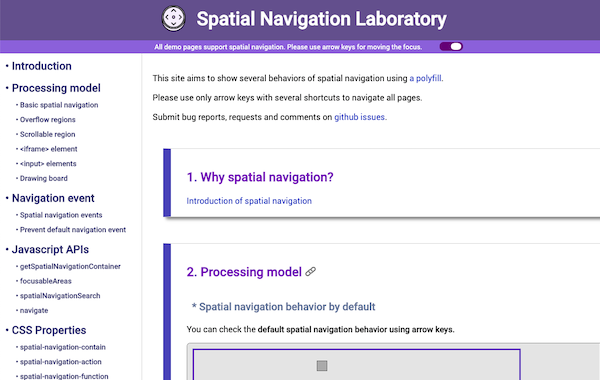
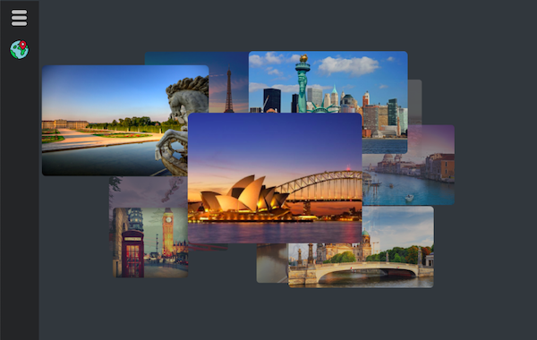
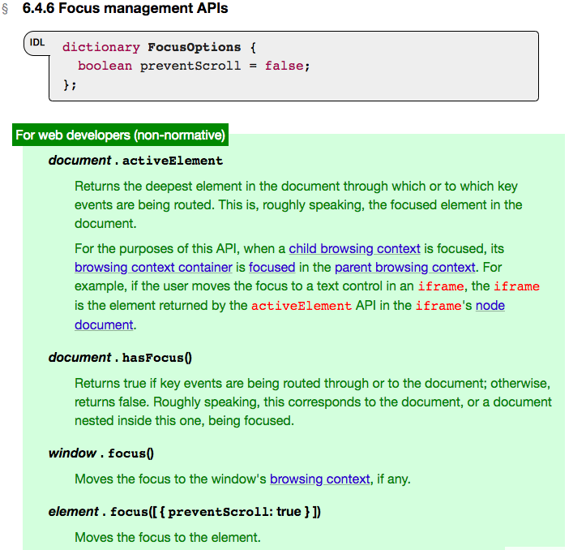
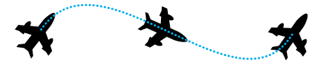
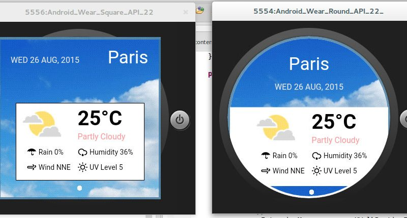

Jihye Hong · Software Engineer · Web Platform
A product-minded engineer with 10+ years across browser engines, web standards, and technology strategy — defining, building, and launching products at scale.
Get in touch ↗
10+years building for the web
3web specifications edited
4technology startup investments
01 / Approach
The best technical work changes what is possible and makes that possibility legible to people.
02 / Experience
From standards to strategy.
2022 — 2025Remote · London · Seoul
Igalia
Senior Software Engineer · Product-Focused Engineering Leadership
- Led proposals, explainers, demos, and Chromium implementation for Dictionary API and CSS Search Highlight.
- Contributed browser-engine work across Chromium and Mozilla Gecko, including Interop 2023 and content-visibility: auto.
- Improved scrolling performance for Bloomberg’s Chromium-based browser.
2021 — 2022Seoul
Samsung Venture Investment
Investment Manager · Technology & Product Strategy
- Managed investments and technology strategy across quantum computing, AR/VR, AI, and sensor hardware.
- Led technical and financial diligence, valuation, and strategic collaboration for QC Ware, DoubleMe, Elfys, and STRA.
2013 — 2021Seoul
LG Electronics
Software Engineer · Product-Led Development
- Built and maintained the Chromium-based webOS Smart TV browser, including upstream synchronization and performance work.
- Proposed and co-edited W3C CSS Spatial Navigation, CSS Motion Path, and CSS Round Display; contributed preventScroll to WHATWG HTML.
- Built WebGL-based animation tooling and shipped products for Smart TV and mobile; shared web technology through internal writing, training, and mentoring.
03 / Selected work
Making the platform move forward.
01
PERSONAL PROJECT · 2026—PRESENT
Routine Builder
An AI-powered daily planning and review application. I designed the flow around check-ins, saved records, AI reviews, and planning for the next day — then iterated on the product through an AI-assisted development workflow.
Open app ↗
02
WEB PLATFORM · 2025
Dictionary API
A browser platform feature that lets developers customize integrated dictionaries — from proposal and demo to Chrome implementation in C++ and JavaScript.
Explainer ↗Chromium patch ↗

04
WEB PLATFORM · 2024
CSS Search Highlight
A proposed standard that gives authors control over in-page search-result highlights — now implemented in Google Chrome.
Explainer ↗Draft specification ↗
CSS · Standards · Chrome

PERSONAL PROJECT
Travel Gallery
A Smart TV and PC photo gallery, powered by a high-performance WebGL animation library.
View demo ↗
WHATWG · 2020
Element.focus() preventScroll
A contribution to the HTML standard that prevents unnecessary page scrolling when focus moves to an element. The feature is now supported by Chrome, Firefox, and Edge.
Specification ↗

W3C · 2016—17
CSS Motion Path
Co-edited the CSS Motion Path specification, adding features such as offset-path and offset-anchor and contributing to its test suite.
Specification ↗Demo ↗

W3C · 2015—16
CSS Round Display
Proposed and co-edited a web standard for round displays, then built a polyfill and demos that explored real-world smartwatch experiences.
Specification ↗Demo ↗
04 / Credentials
A practice grounded in research.
Education
M.S. Computer Science
KAIST, AI & Media Lab · 2011—13
B.S. Computer Science, Summa Cum Laude
Ewha Womans University · 2007—11
Published & spoken
- Signage Service Platform · TTA Journal, 2017
- Efficient 3D Content Authoring · VSMM, 2012
- AR Paint · ICEC, 2012
- Women Tech Maker Seoul · 2019
- W3C TPAC Breakout · 2018
Tools & languages
HTML · CSS · JavaScript · C++ · WebGL · OpenCV
Product strategy · Market analysis · Specification writing · Stakeholder alignment
Korean (native) · English (fluent)
05 / Archive
Standards, research, and conversations.
SPECIFICATIONS & DEMOS
Web platform work
IMPLEMENTATION RECORD
Engine contributions
PUBLICATIONS & PATENTS
Published work
TALKS & WRITING
Sharing the web